Da primeira empresa cadastrada até o arquivo pro contador: o que cada tela faz, a ordem de começar e as dúvidas mais comuns.
No navegador do celular ou do computador: contabilidadepro.luqsys.com.br
O usuário é o seu e-mail. Ainda não tem conta? Toque em Testar 3 dias grátis. Quer só olhar? Toque em veja a demo, com uma padaria de exemplo.
A tela de entrada não tem "esqueci a senha". Se outra pessoa da conta for Admin, ela troca a sua em Usuários. Se não, chame o suporte no WhatsApp. Pra trocar a sua senha, o Admin abre Usuários → ✏️ no próprio nome → campo Senha.
Depois de entrar, toque em 🔐 Ativar Face ID no rodapé do menu: da próxima vez é só usar Entrar com Face ID. Pra ter o ícone na tela inicial, abra contabilidadepro.luqsys.com.br/instalar no celular e siga o passo a passo do iPhone ou do Android.
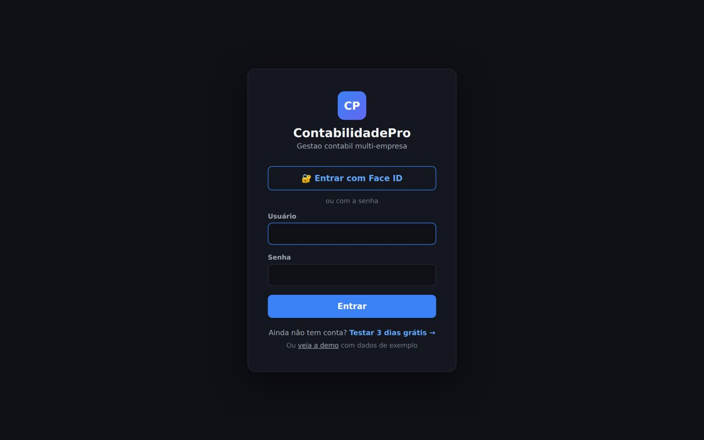
No primeiro acesso o sistema abre a tela de boas-vindas, com 6 passos. Cada um leva direto pra tela certa:
Nome, CNPJ, regime (Simples Nacional ou Lucro Presumido) e ramo.
Opcional. Código, nome e tipo de cada conta.
Data, tipo, descrição e valor.
DAS, DARF, GPS ou FGTS com competência, valor e vencimento.
Se tiver funcionário, CLT ou doméstico.
Fica com ícone na tela inicial, igual um aplicativo.
Depois toque em Ir pro sistema →. Dá pra rever esses passos pela Ajuda.
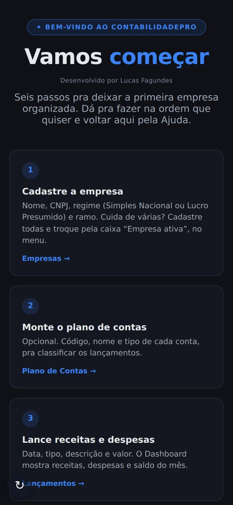
Da empresa ativa: receitas, despesas e saldo do mês, funcionários ativos, quantas obrigações faltam pagar e o valor do ativo imobilizado. Embaixo, o gráfico dos últimos 6 meses e as próximas obrigações.
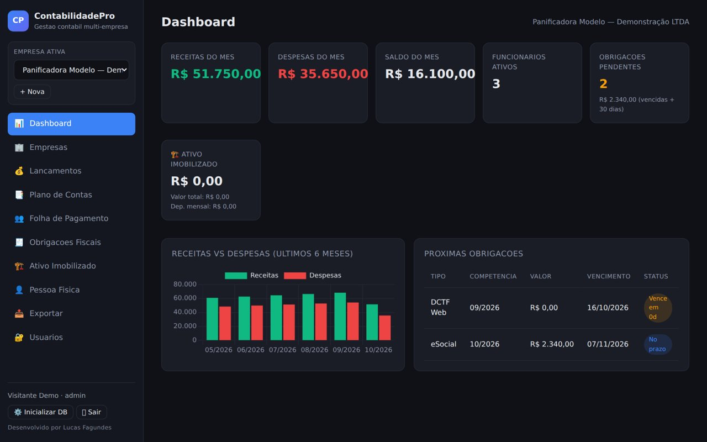
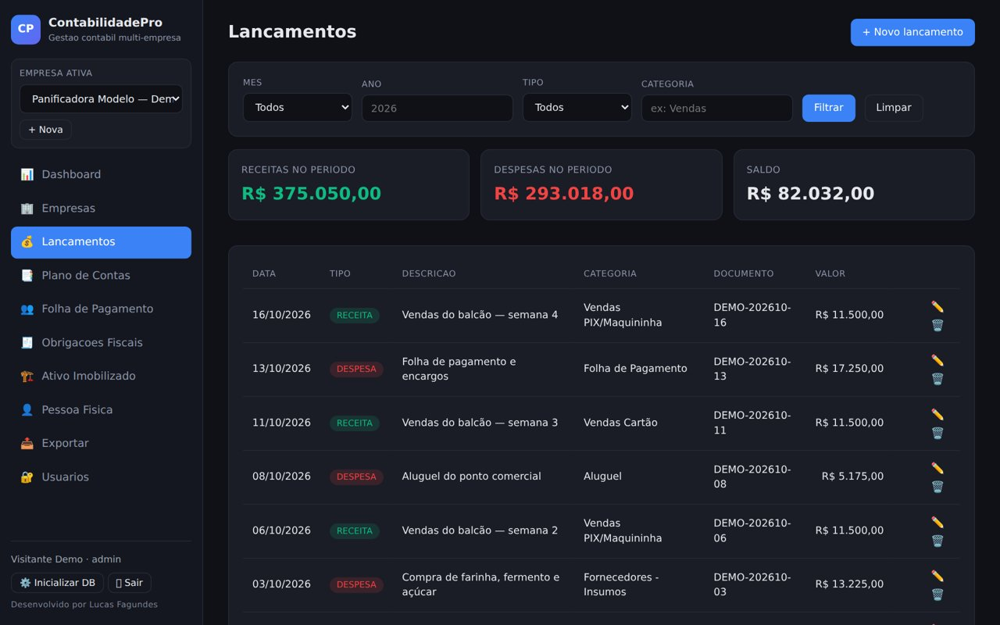
Cada empresa tem o seu. Em + Nova conta: código (ex.: 1.1.01), nome, tipo (Receita, Despesa, Ativo, Passivo ou Patrimônio) e categoria. A conta aparece pra escolher no lançamento.
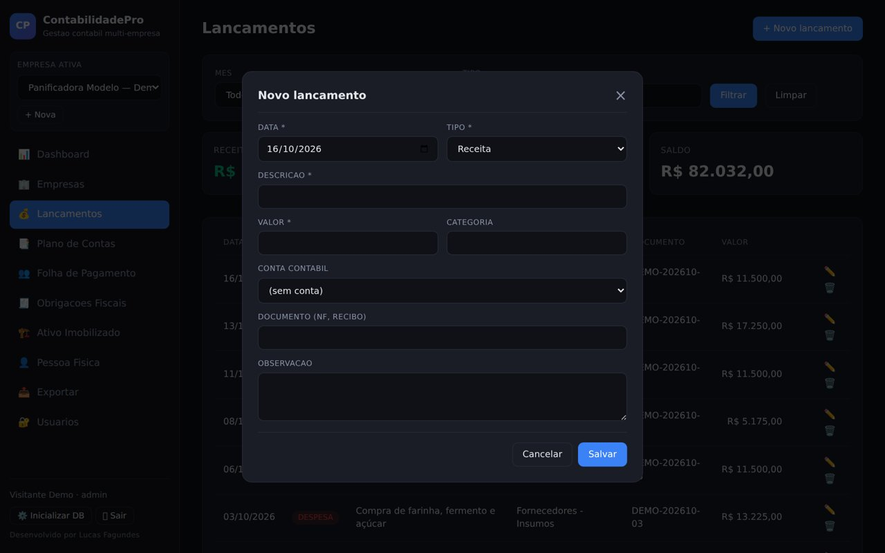
O status mostra No prazo, Vence em Xd (5 dias ou menos), Vencido ou Pago.
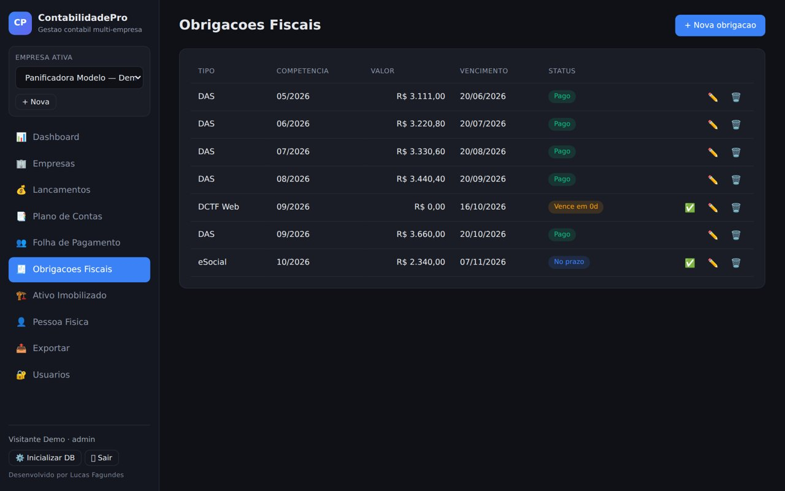
| Funcionário | Nome, CPF, cargo, salário base, admissão e tipo de vínculo: CLT ou Doméstico (eSocial). O 🗑️ deixa o funcionário inativo, não apaga. |
| ASO | Datas do exame admissional e do último periódico. A coluna ASO avisa quando faltam menos de 60 dias pro próximo (2 anos do último) ou quando venceu. |
| Gerar folha | Escolha funcionário, mês e ano. Informe horas extras, vales, adicionais e descontos. A prévia mostra INSS, IRRF e líquido. No doméstico, também FGTS, INSS patronal, a DAE e o custo do empregador. |
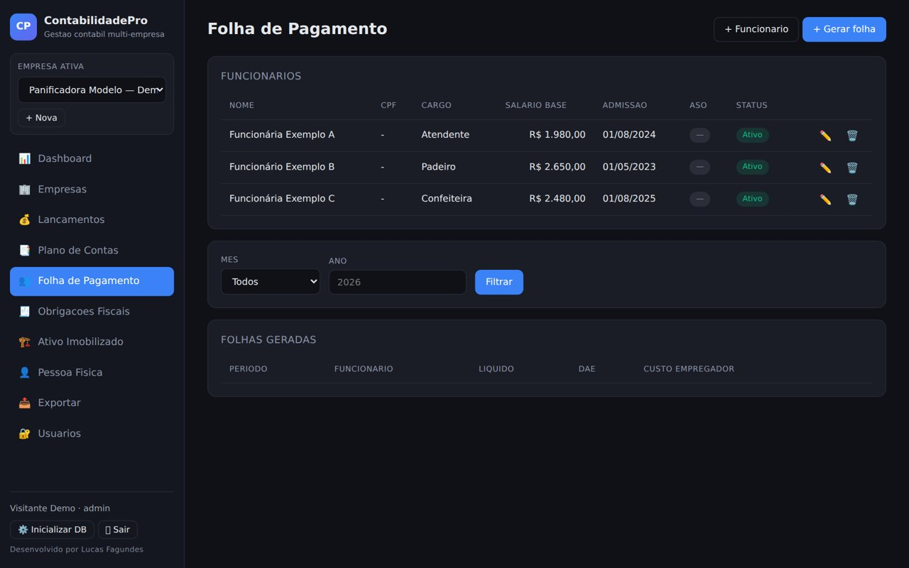
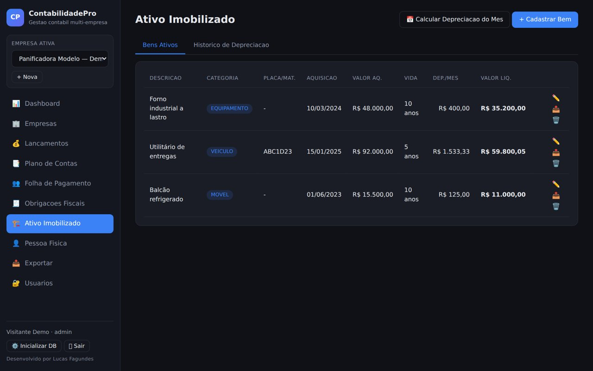
Aparece no menu quando a empresa ativa é do Lucro Presumido. Escolha trimestre e ano e toque em Calcular automaticamente: o sistema soma as receitas do trimestre pelo tipo de receita informado no lançamento e calcula IRPJ, CSLL, PIS e COFINS. Salvar + Gerar DARFs cria as guias em Obrigações Fiscais. É uma conta de apoio: confira com o contador.
Área separada das empresas, pro IR de pessoas. Cadastre a pessoa e escolha em Pessoa ativa, no topo.
| Rendimentos | Salário, pró-labore, aluguel, dividendo, aplicação e outros, com IR e INSS retidos. |
| Carnê-leão | O IR do mês sai pela tabela mensal. Um aviso mostra o pendente da competência anterior e o vencimento. |
| Bens, dívidas e deduções | Valor do ano anterior e do atual. Deduções de saúde, educação, previdência, pensão e outros. |
| Resumo IR | Junta o ano, estima o imposto e compara deduções legais com o desconto simplificado. Exporta em TXT. Não envia nada pra Receita. |
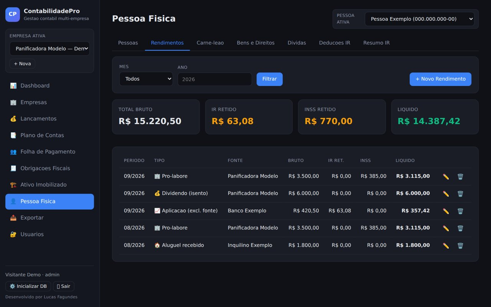
Exportar: escolha mês e ano e baixe em TXT ou JSON. O arquivo traz o resumo do período, os lançamentos, as folhas e as obrigações da empresa ativa, pronto pra mandar pro contador.
Usuários (só Admin): crie um acesso pra cada pessoa. Viewer só vê, Editor vê e edita, Admin tem acesso total. Dá pra marcar exceções por módulo.
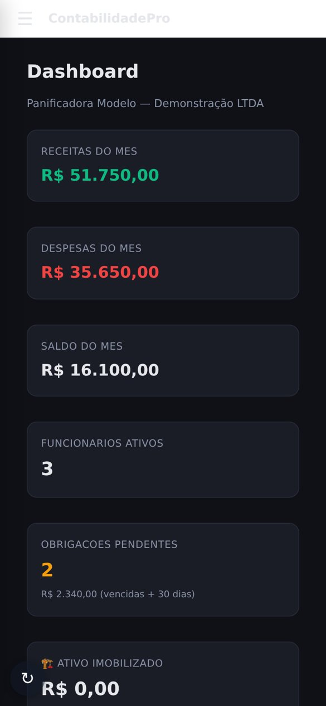
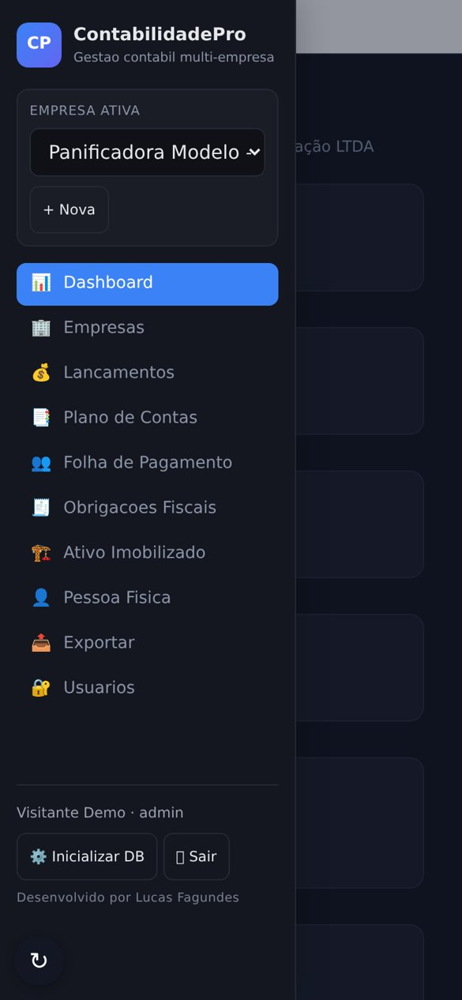
É o mesmo sistema, com os mesmos dados do computador.